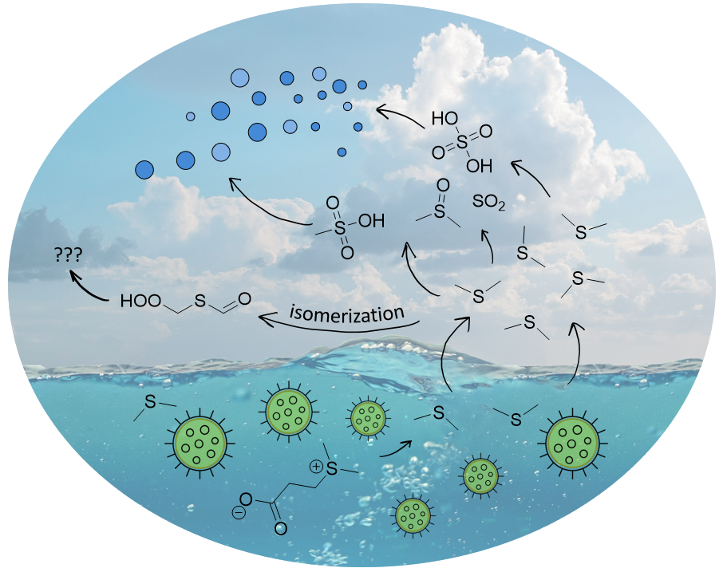
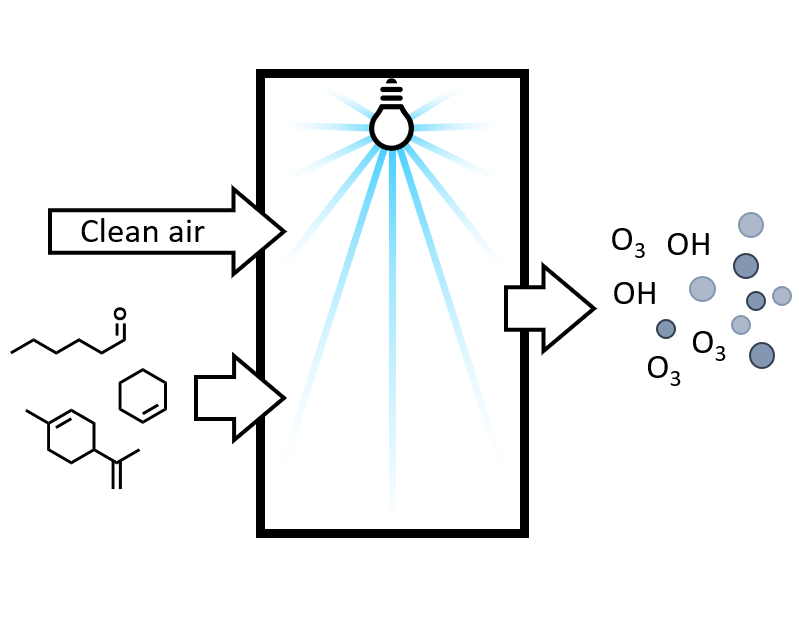
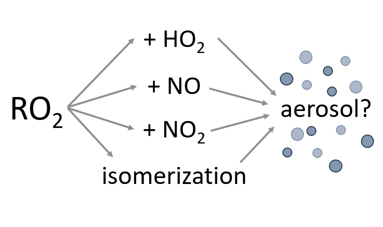
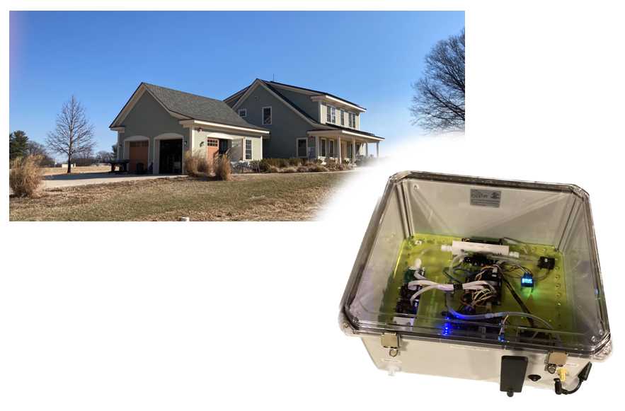
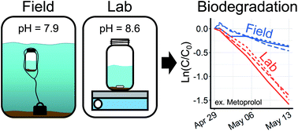
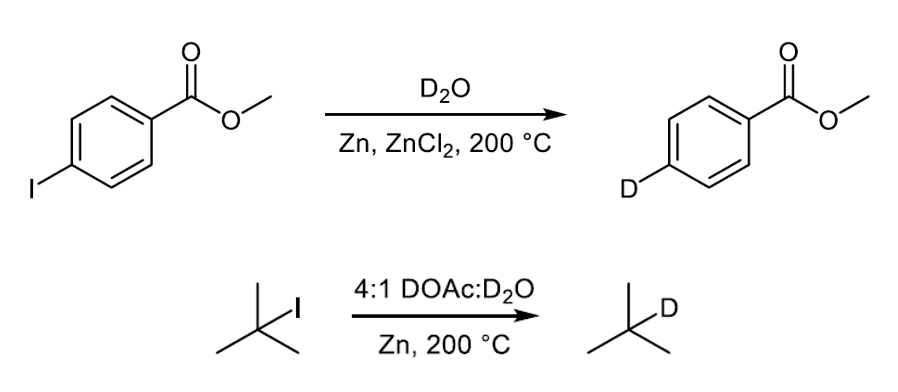
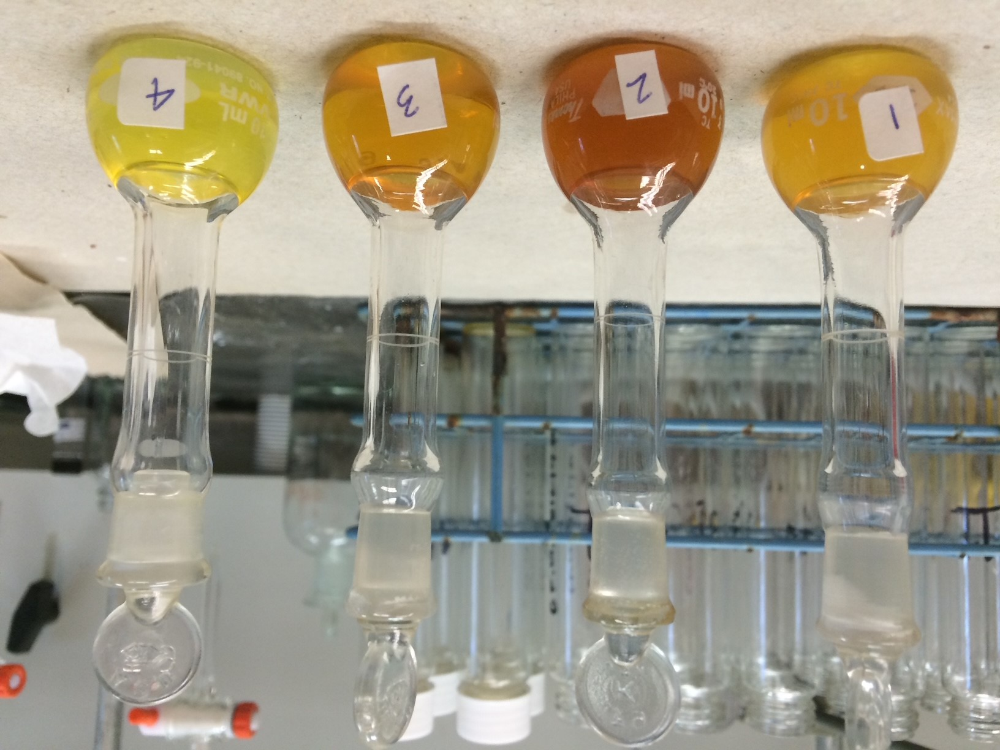

Biogenic Sulfur
Chemistry

Biologically-produced dimethyl sulfide (DMS) is a major source of sulfate aerosol above the oceans, influencing the global climate system. Our work (2021, 2022, 2023) explores the chemistry of DMS oxidation to help improve its representation in global models.
Germicidal UV light and
indoor air quality

222 nm ultraviolet light is a promising new means of reducing the spread of airborne pathogens. However, our recent study demonstrates that 222 nm light can form harmful air pollutants including ozone, OH radicals, and secondary organic aerosol under some conditions.
The role of
peroxy radicals

The peroxy-radical (RO2) represents a key branch point in atmospheric oxidation, but laboratory conditions influencing RO2 fate often do not match those of the real atmosphere. This ongoing work re-examines historical chamber experiments and assesses the impact of RO2 chemistry on aerosol parameterizations.
Chemical Assessment of Surface and Air (CASA)

The CASA campaign, a collaborative experiment at the NIST test house, focused on the processes driving the chemistry of the indoor environment. I helped to design, build, and successfully deploy a new low-cost VOC sensor array which can distinguish chemical families.
Measuring biodegradation
of pharmaceuticals

Biodegradation is an important loss pathway of organic micropollutants, but measuring it accurately in the lab is challenging. This work demonstrates a new field-based measurement technique which improves on some of the issues with laboratory measurements.
Selective deuteration of
organic iodides

Selectively tagging a molecule with deuterium is useful in pharmaceutical design and fundamental chemistry. This undergraduate thesis demonstrates new compatible substrates and makes progress towards understanding the mechanism of zinc-mediated deuteration.
Hoosic River
PCB contamination

The Hoosic River suffers from historical polychlorinated biphenyl (PCB) contamination. Measurements of PCBs in crayfish and trout carried out with Professors Thoman and Richardson of Williams College demonstrate that the river is recovering.